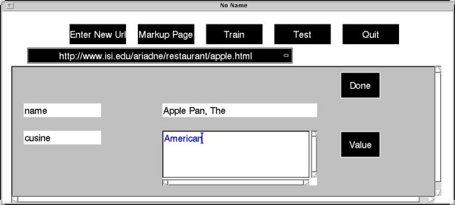
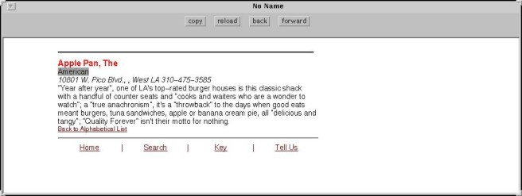

STEP 3:
now you can introduce another attribute name (e.g., cuisine) and
to cut-and-paste its corresponding value (i.e., American) from the
browser in which the target-page is displayed.


Last
modified: Fri Jul 24 13:40:28 PDT 1998